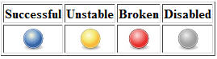
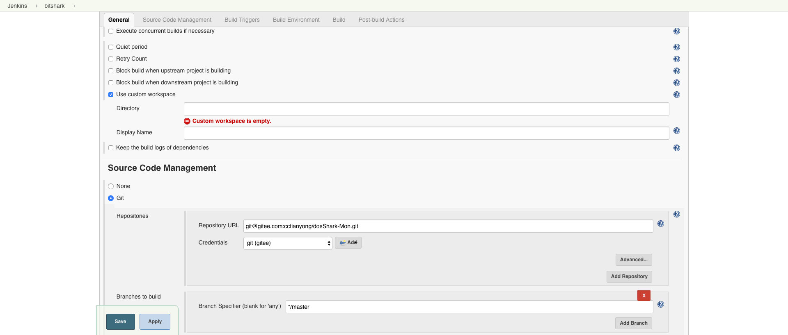

jenkins¶
持续集成¶
Continuous integration (CI) 持续集成是一种软件开发实践，即团队开发成员经常集成他们的工作，通常每个成员每天至少集成一次，也就意味着每天可能会发生多次集成。每次集成都通过自动化的构建（包括编译，发布，自动化测试）来验证，从而尽快的发现集成错误。许多团队发现这个过程可以大大减少集成的问题，让团队能够更快的开发内聚的软件。
没有持续集成的情况下：
项目做模块集成的时候，发现很多接口都不通
浪费大量时间
需要人手动去编译打包最新的代码
构建过程不透明
分布版本，上线，基本靠手
脚本乱飞
持续集成最佳实践
- 维护一个单一的代码库
- 使用构建自动化
- 执行测试是构建的一部分
- 集成日志即历史记录
- 使用统一的依赖包管理库
- 每天至少集成一次
持续集成概览

安装¶
Debian/Ubuntu¶
Jenkins 使用 java 开发，所以在部署 jenkins 之前，需要安装 jdk
sudo apt-get install openjdk-8-jre
最新版本可在apt存储库中找到，较旧但稳定的LTS版本在此apt存储库中。
wget -q -O - https://pkg.jenkins.io/debian/jenkins.io.key | sudo apt-key add -
sudo sh -c 'echo deb http://pkg.jenkins.io/debian-stable binary/ > /etc/apt/sources.list.d/jenkins.list'
sudo apt-get update
sudo apt-get install jenkins
CentOS/RHEL¶
Jenkins 使用 java 开发，所以在部署 jenkins 之前，需要安装 jdk
su -c "yum install java-1.8.0-openjdk"
最新版本可以在 rpm 存储库中找到，较旧但稳定的 LTS 版本在此 RPM 存储库中。
sudo wget -O /etc/yum.repos.d/jenkins.repo https://pkg.jenkins.io/redhat-stable/jenkins.repo
sudo rpm --import https://pkg.jenkins.io/redhat-stable/jenkins.io.key
sudo yum install jenkins
插件¶
默认 plugins¶
-
该插件允许用户创建“文件夹”来组织作业。用户可以定义自定义分类（例如，按项目类型，组织类型）。文件夹是可嵌套的，您可以在文件夹中定义视图。
-
使用策略定义在用户提交的文本中允许有限的HTML标记。
-
此插件允许您在构建时间过长时自动中止构建。一旦达到超时，Jenkins就像一只无形的手点击了“中止构建”按钮。
-
允许将凭据绑定到环境变量，以便从其他构建步骤中使用。
-
将时间戳添加到控制台输出
-
用于删除构建工作区的插件。
-
这个插件为Jenkins添加了Apache Ant支持。这个功能曾经是核心的一部分，但是从Jenkins 1.431开始，它被分成了单独的插件。
-
此插件可以调用Gradle构建脚本作为主构建步骤。
-
一套插件，可让您协调自动化，简单或复杂。有关更多详细信息和文档，请参阅Jenkins网站。
Github Organization Folder Plugin
过时的插件。升级到1.6后可能会被删除。
-
管道状态查看插件
-
这个插件允许使用Git作为构建SCM，包括几个提供者的存储库浏览器。需要最近的Git运行时（最低1.7.9，建议1.8.x）。与Git运行时的交互是通过使用Git Client插件来执行的，该插件仅在官方git客户端上进行测试。使用外来设施需要您自担风险。
-
这个插件将Subversion支持（通过SVNKit）添加到Jenkins。这个插件捆绑在jenkins.war中。
-
此插件允许您通过SSH管理在
*nix机器上运行的代理程序。 Matrix Authorization Strategy Plugin
提供基于矩阵的安全授权策略（全局和每个项目）。
-
为Jenkins添加Unix可插入身份验证模块（PAM）支持。
-
这个插件是Jenkins核心的一部分，直到1.468。之后，它被拆分为可单独更新的插件。但是，出于向后兼容的目的，后续核心版本仍然捆绑它。如果你根本不使用这个插件，你可以简单地禁用它。
-
此插件允许您配置电子邮件通知的各个方面。您可以自定义何时发送电子邮件，谁应该接收电子邮件以及电子邮件所说的内容。
-
此插件允许您配置构建结果的电子邮件通知。这是原始核心电子邮件组件的突破。
常用 plugins¶
-
这个插件源自非常酷的SCP插件。您可以使用SSH插件通过ssh在远程计算机上运行shell命令。
-
这个插件是一个构建触发器，允许GitLab在推送代码或创建合并请求时触发Jenkins构建。基于每个作业完成配置。
-
一套插件，可让您协调自动化，简单或复杂。有关更多详细信息和文档，请参阅Jenkins网站。
-
这个插件允许使用Git作为构建SCM，包括几个提供者的存储库浏览器。需要最近的Git运行时（最低1.7.9，建议1.8.x）。与Git运行时的交互是通过使用Git Client插件来执行的，该插件仅在官方git客户端上进行测试。使用外来设施需要您自担风险。
-
添加从项目中配置的git存储库中选择分支，标签或修订的功能。
-
此插件接受war / ear文件，并在构建结束时将其部署到正在运行的远程应用程序服务器。实施基于Cargo。当前支持的容器列表包括：
- Tomcat 4.x/5.x/6.x/7.x
- JBoss 3.x/4.x
- Glassfish 2.x/3.x
Role-based Authorization Strategy
添加新的基于角色的策略来管理用户的权限。
-
这个插件发布 HTML 报告
-
此插件允许您从流行的测试工具中捕获报告。 Jenkins将生成具有性能和稳健性趋势报告的图表。 它包括根据报告的错误百分比将最终构建状态设置为良好，不稳定或失败的功能。
-
此插件允许您从Cobertura捕获代码覆盖率报告，Jenkins将生成覆盖率的趋势报告。
-
该插件可轻松集成SonarQube™，这是一种用于连续检查代码质量的开源平台。
-
Blue Ocean是一个重新思考Jenkins用户体验的新项目。 Blue Ocean专为Jenkins Pipeline设计并与Freestyle工作兼容，通过以下主要功能减少了团队中每个成员的混乱并提高了清晰度：
- CD管道的复杂可视化，允许快速和直观地理解软件管道状态。
- 管道编辑器，通过引导用户通过直观和可视的过程来创建管道，使自动化CD管道变得平易近人。
- Jenkins UI的个性化，以满足DevOps团队每个成员的基于角色的需求。
- 在需要干预和/或出现问题时精确定位。Blue Ocean UI 显示了需要注意的地方，便于异常处理和提高生产力。
- 分支和拉取请求的本机集成可在与 GitHub 和 Bitbucket 中的其他代码协作代码时实现最大的开发人员生产力。
插件管理¶
Jenkins 通过大量插件提供附加功能，管理 Jenkins 插件主要是安装和配置。这里主要介绍 jenkins 插件的安装，具体配置需要参考具体 Jenkins 插件的说明。
Jenkins 提供了 Update Center，可以从 Update Center 在线下载安装 Jenkins 插件。
管理 Jenkins 插件的方法主要有两种。一种是通过 Jenkins 的 Web 界面，另一种是通过 Jenkins CLI。
通过 web 界面管理插件¶
Jenkins 界面 –> System Manager –> Manager Plugins –> Available
在 Jenkins 里面点击安装后，报了如下的错误：

错误的原因是国内的网络不能访问国外的网站，遇到这种情况我们就需要手动进行安装，具体的步骤如下：
进入 Jenkins Plugins 搜索需要的插件，如下图所示：

找到需要下载的插件，进行下载
选择你要下载的版本

下载完成后，进入 jenkins 页面，点击 Systme Manager –> Manager Plugins –> Available

点击 update 按钮安装插件，之后会跳转页面

通过 Jenkins CLI 的 install-plugin 命令管理插件¶
java -jar jenkins-cli.jar -s http://localhost:8080/ install-plugin <SOURCE> ... [-deploy] [-name alias_name] [-restart]
参数说明
- SOURCE 是插件文件或插件的URL；
- -deploy 直接部署插件，无需推迟到 Jenkins 服务器重启的时候再部署插件
- -name 给插件命名别名
- -restart 安装插件后重启 jenkins 服务器
基础配置¶
什么是 jenkins?
持续集成、自动测试、持续部署的超级引擎，支持自定义工具集、多种交付通道。
镜像管理¶
Jenkins 官方提供了一个 镜像列表 ，会列出最快的镜像。
进入 Jenkins 页面，点击 Manager Jenkisn –> Manager Plugins –> Advanced
将 Update site 更换为
https://mirrors.tuna.tsinghua.edu.cn/jenkins/updates/current/update-center.json
Jenkins 目录¶
| 目录 | 内容 |
/var/lib/jenkins |
主目录 |
/var/lib/jenkins/workspace |
工作空间 |
/etc/init.d/jenkins |
启动文件 |
/etc/sysconfig/jenkins |
配置文件 |
/var/cache/jenkins |
程序文件 |
/var/log/jenkins |
日志文件 |
卡启动问题¶
Jenkins 在第一次启动的时候会向官网回传信息，如果网络在线，但是 Jenkins 不能访问 https://jenkins-ci.io 这时关闭网络，离线就能正常安装
备份¶
tar zcvf jenkins.tar.gz /var/lib/jenkins
写一个每天定时备份的脚本，保留 15 天的备份。
#!/usr/bin/env bash
BACKUP_PATH="/opt/jenkins_backup"
JENKINS_HOME_PATH="/var/lib/jenkins"
BACKUP_ROTATE="15"
DATE_DAY=`date +%F`
function check_backup_dir() {
test -d ${BACKUP_PATH} || mkdir -p ${BACKUP_PATH}
}
function backup_rotate() {
DELETE_DATE_DAY=`date -d "-${BACKUP_ROTATE} day ago" +%F`
if [ -f ${BACKUP_PATH}/jenkins_${DELETE_DATE_DAY}.tar.gz ]; then
rm -rf ${BACKUP_PATH}/jenkins_${DELET_DATE_DAY}.tar.gz
fi
}
function Backup() {
check_backup_dir
backup_rotate
echo "[`date +'%Y-%m-%d %H:%M:%S'`] start backup"
if [ ! -f ${BACKUP_PATH}/jenkins_${DATE_DAY}.tar.gz ]; then
start_backup_second=`date +%s`
cd ${JENKINS_HOME_PATH} && tar -zcPf ${BACKUP_PATH}/jenkins_${DATE_DAY}.tar.gz .
stop_backup_second=`date +%s`
let use_time=${stop_backup_second}-${start_backup_second}
echo "[`date +'%Y-%m-%d %H:%M:%S'`] use time ${use_time}s"
echo "[`date +'%Y-%m-%d %H:%M:%S'`] file size `du -h ${BACKUP_PATH}/jenkins_${DATE_DAY}.tar.gz`"
else
echo "[`date +'%Y-%m-%d %H:%M:%S'`] Backup completed today!"
fi
echo "[`date +'%Y-%m-%d %H:%M:%S'`] stop backup"
}
function Recovery() {
find ${BACKUP_PATH} -name jenkins*.tar.gz | cut -d '/' -f 4 | cut -d "_" -f 2 | cut -d '.' -f 1 | nl
list_length=`find /opt/jenkins_backup/ -name jenkins*.tar.gz | wc -l`
read -p "Select date recovery >>> " number
if grep '^[[:digit:]]*$' <<< "$number"; then
if [ $number -gt $list_length -o $number -le 0 ]; then
echo "[`date +'%Y-%m-%d %H:%M:%S'`] The selected date does not exist!"
else
date=`find ${BACKUP_PATH} -name jenkins*.tar.gz | cut -d '/' -f 4 | cut -d "_" -f 2 | cut -d '.' -f 1 | sed -n ${number}p`
tar -zvxf ${BACKUP_PATH}/jenkins_${date}.tar.gz -C ${JENKINS_HOME_PATH}
fi
else
echo "Please enter the correct number"
fi
}
case $1 in
backup)
Backup
;;
recovery)
Recovery
;;
*)
echo "Usage: $0 {backup|recovery}"
exit 1
;;
esac
设置定时任务
0 2 * * * bash /opt/jenkins_backup/jenkins_toolbox.sh backup
构建状态¶
Jenkins 会基于一些后处理器任务为构建发布一个稳健指数（从 0 ~ 100），这些任务一般以插件的方式实现。
他们可能包括单元测试（JUnit）、覆盖率（Cobertura）和静态代码分析（FindBugs）。
分数越高，表明构建越稳定。下图中分级符号概述了稳定性的评分范围。任何构建作业的状态（总分100）低于80分就是不稳定的。
| 颜色 | 状态 |
|---|---|
| 蓝色 | 完成构建，被认为是稳定构建 |
| 黄色 | 完成构建，被认为是不稳定的构建 |
| 红色 | 构建失败 |
| 灰色 | 禁用了构建 |

图例可以在 https://jenkins.renkeju.com:8080/legend 中查看
系统设置¶
工作目录设置¶
在 Linux 环境中，Jenkins 的默认工作目录在 /var/lib/jenkins/，但是我们有些需要特殊指定工作目录的项目，需要默认的 JENKINS_HOME 分开。
进入一个项目，在【Genaral】里点击“高级”按钮

配置指定自定义工作目录空间，但是需要特别注意目录权限

- Maven 项目设置
- 设置系统 JDK ANT Maven
- Jenkins Location
- 邮件通知
- Configure Global Security
nginx 反向代理 Jenkins¶
nginx 反向代理 jenkins 配置
upstream jenkins_server { server 127.0.0.1:8080 fail_timeout=0; } server { listen 80; server_name jenkins.example.com; access_log /var/log/nginx/jenkins/access.log; error_log /var/log/nginx/jenkins/error.log; location / { proxy_set_header Host $host:$server_port; proxy_set_header X-Real-IP $remote_addr; proxy_set_header X-Forwarded-For $proxy_add_x_forwarded_for; proxy_set_header X-Forwarded-Proto $scheme; proxy_pass http://jenkins_server; } }nginx 反向代理 jenkins ssl 配置
upstream app_server { server 127.0.0.1:8080 fail_timeout=0; } server { listen 80; server_name jenkins.example.com; return 301 https://$host/$request_uri; } server { listen 443 ssl; server_name jenkins.example.com; access_log /var/log/nginx/jenkins/access.log; error_log /var/log/nginx/jenkins/error.log; location / { proxy_set_header Host $host:$server_port; proxy_set_header X-Real-IP $remote_addr; proxy_set_header X-Forwarded-For $proxy_add_x_forwarded_for; proxy_set_header X-Forwarded-Proto $scheme; proxy_redirect http:// https://; proxy_pass http://app_server; } }Attention
- 重启nginx或重新加载nginx配置之前，需要创建
/var/log/nginx/jenkins目录，否则nginx启动失败并报错。 - 配置完成后，访问 web 页面，还是会报出“反向代理设置有误”，这是因为之前我们通过 8080 端口访问 Jenkins，当使用 Nginx 进行反向代理后，在【系统管理】–> 【系统设置】的 jenkins URL 配置中还是 8080 端口，我们需要更改为 nginx 所指定的端口号。
- 重启nginx或重新加载nginx配置之前，需要创建
主题设置¶
Jenkins 自带的样式比较丑，我们也有很多第三方样式库可以选择，这里我们介绍 jenkins-material-theme 。
选择主题颜色

将 URL 中的
{{your-color-name}}``更换为你选择的颜色：``https://cdn.rawgit.com/afonsof/jenkins-material-theme/gh-pages/dist/material-{{your-color-name}}.css安装 ` Jenkins Simple Theme 插件 <https://wiki.jenkins-ci.org/display/JENKINS/Simple+Theme+Plugin>`_
点击
Manager Jenkins点击
Configure System并找到Theme使用第三方的CSS样式有两种方式
- 添加
CSS URL，将字段设置为生成的 CSS URL - 下载 URL 的 CSS 样式文件，将文件内容黏贴入
Extra CSS
- 添加
点击
Save